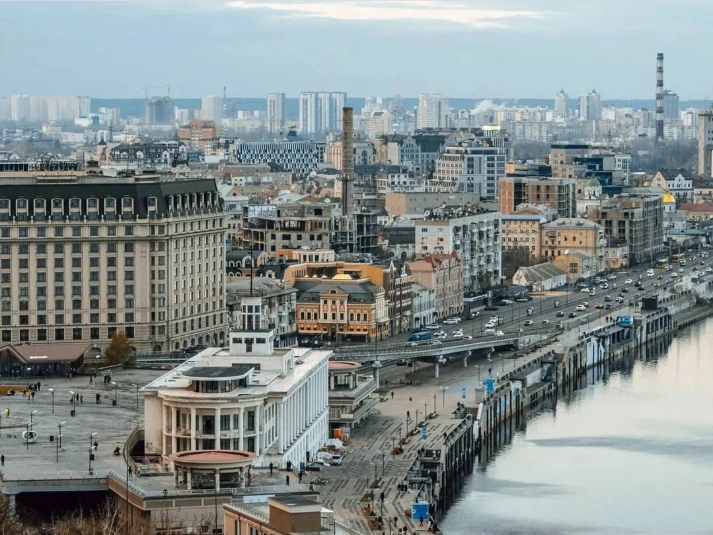

Дата народження: 16.08.2007
Місце народження: м. Київ.
Освіта: навчалася у школі №15.
Зараз навчаюся у Національному технічному університеті України
«Київський політехнічний інститут імені Ігоря Сікорського»,
група ІО-41з.
Одним із моїх улюблених міст є Київ. Це красиве місто з багатою історією, великою кількістю пам'яток та цікавих місць. Особливо мені подобаються архітектура міста, парки та краєвиди на Дніпро.
